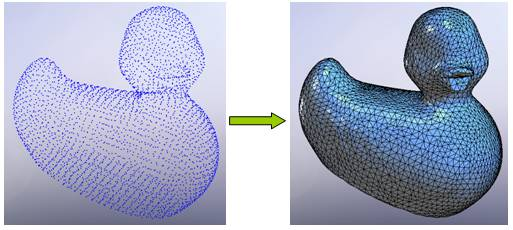
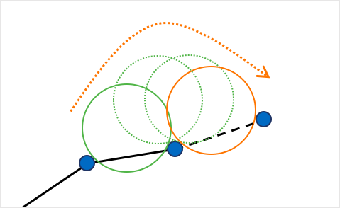

CS 184: Computer Graphics and Imaging, Spring 2020
Final Project: Point Cloud to Mesh
Jordan Knox, Brian Fu, Mickey Matiss, Kendall Choy
Abstract

Our goal for this project is to create a program that is capable of taking in a .ply file of vertices that will then convert it into a mesh and then rendering the mesh. The .ply file is a point cloud, which is usually the output produced by 3D scanners. Our first step is reading the .ply file and computing the normals for each vertex in the cloud. The next step is to run the ball pivot algorithm on the points and normals together in order to generate the faces. Finally, we put together the vertices edges and faces in order to render the mesh. We used the browser application threeJS in order to render our finished mesh.
Technical Approach
Starting With Project 2
We had originally intended to use our project 2 code as the starter code for this project. It made sense, as this project's last step is to render a mesh, and that's what the project 2 end product was. But, we hit a few snags in that plan. The first snag was the format of the point cloud data we could find. All of the point clouds we could find were in .ply file format. But the meshedit starter code took in meshes in .dae file format. We tried a few solutions to the conversion of .ply to .dae but none of them worked very well and we did not want to spend hours learning to write our own .dae files, so we decided to move away from the project 2 code as the base for our renderer. We looked at a few other ways to render the meshes we were going to generate. Our first thought was to use a program called Blender, but upon further investigation, we realized that blender was a bit too advanced than we needed for our render, and the finished products looked somewhat odd. Next we turned to a program called ThreeJS and that's what we eventually used to render our finished mesh.
.ply Files
The first issue we had to tackle was dealing with the format of the point clouds. Most point clouds are found in .ply files. The .ply files are fairly easy to read and understand. We decided to use a repository from Stanford as our source for the majority of our point clouds. The .ply files on that repository were comprised of vertices and faces. We needed the vertices and the vertex normals in order to run our ball pivot algorithm. Then we erased the original faces from the .ply file. This gave us a .ply file that we could use the ball pivot algorithm on to generate a triangle mesh.
The Ball Pivot Algorithm
The Ball-Pivoting Algorithm is named for the simulated use of a virtual ball to help reconstruct a mesh from a point cloud. To construct the mesh from the point cloud, you first assume that the cloud consists of points from the surface of the object we are trying to make a mesh for.
The algorithm then works by simulatimng a tiny ball rolling across the points in the cloud. The ball's size is dependant on the scale of the mesh. It is typically slightly larger than the average space between points. From there, you drop the ball onto the points. It will end up settling on three points and that will be the "seed triangle". This is where we will start our algorithm. From the seed triangle, we then roll the ball outwards in any direction over one of the edges formed between two of the three points. The ball will then come to rest between the two starting points and one new one. This new triangle will then be added to the mesh. This process will be repeated until all of the points have been touched and the mesh is fully formed.
Here is a 2D visual for how the ball moves along the points.
Results

image title
caption for image

image title
caption for image

image title
caption for image